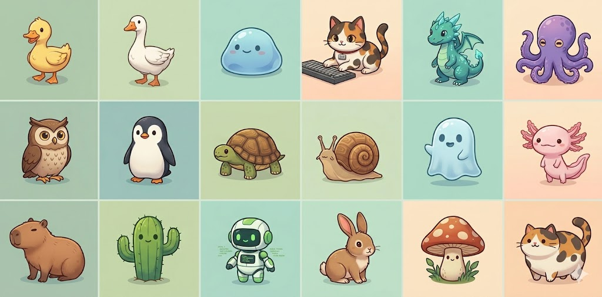

OWL 猫头鹰
夜间巡逻型
EPIC
/\ /\ ((.)(.)) ( >< ) `----´
更像“终端里盯日志的守夜人”，适合做 Buddy 页的视觉主角。
这一页不再只做“摘要说明”，而是把 Buddy 重新排成一个更像图鉴与终端展台的专题：你能同时看见 18 个物种、眼睛与帽子变体、稀有度、互动命令，以及它为什么能代表 Claude Code 正在从“工具 CLI”往“有情绪的工作台”延伸。
/\ /\ ((.)(.)) ( >< ) `----´
更像“终端里盯日志的守夜人”，适合做 Buddy 页的视觉主角。
.---. (.>.) /( )\ `---´
轮廓简洁、辨识度高，很像会蹲在输入框边上等你敲命令的伙伴。
_,--._ ( . . ) /[______]\ `` ``
很适合拿来解释 Buddy 的另一面: 它不是提速工具，而是陪你慢慢把工作做完。
参考图文里把 Buddy 做成了完整图鉴，这一版则把重点收束为站内更适合阅读的结构：先给你能一眼记住的宠物展示，再把它背后的系统拆给你看。
你给的源码里，猫头鹰很适合做“终端电子宠物”的门面角色，耳朵、眼睛、嘴部都很有识别度。
/\ /\ ((.)(.)) ( >< ) `----´
企鹅的体型更紧凑，放在 REPL 输入框旁边时会显得非常“乖巧”，适合做常驻 Companion。
.---. (.>.) /( )\ `---´
乌龟很能代表 Buddy 的“陪你慢慢来”那一面，尤其适合跟耐心、稳态、长时间编码联系起来。
_,--._ ( . . ) /[______]\ `` ``

下面这组把 Buddy 源码里出现的 18 个物种都排成统一风格的终端卡片，方便直接浏览、截图或继续扩展成更完整的图鉴页。
__
<(· )___
( ._>
`--´
经典终端小鸭，适合当入门 Companion。
(·>
||
_(__)_
^^^^
姿态最像“看到你写错命令就冲过来提醒”。
.----. ( · · ) ( ) `----´
最像会在空闲时慢慢摊开的软萌款。
/\_/\
( · ·)
( ω )
(")_(")
最有“桌面搭子”气质的一只。
/^\ /^\ < · · > ( ~~ ) `-vvvv-´
稀有感天然很强，适合当晒图主角。
.----. ( · · ) (______) /\/\/\/\
触手感很强，天然带一点多线程工作的意味。
/\ /\ ((·)(·)) ( >< ) `----´
夜里盯日志、盯报错、盯你提交记录的守夜人。
.---. (·>·) /( )\ `---´
最像会安静蹲在输入框旁边等你敲字。
_,--._ ( · · ) /[______]\ `` ``
适合解释耐心、稳定和长时间陪跑。
· .--. \ ( @ ) \_`--´ ~~~~~~~
慢，但很适合拿来讲稳扎稳打式开发。
.----. / · · \ | | ~`~``~`~
最像“半夜突然飘出来提醒你还有 TODO”。
}~(______)~{
}~(· .. ·)~{
( .--. )
(_/ \_)
线条最特别，天生适合做稀有变体。
n______n ( · · ) ( oo ) `------´
表情空间最大，所以很适合拿来做眼睛人格演示。
n ____ n | |· ·| | |_| |_| | |
站着不动也有戏，终端里非常显眼。
.[||]. [ · · ] [ ==== ] `------´
最贴近“coding agent 自己养了个 agent”。
(\__/)
( · · )
=( .. )=
(")__(")
灵活感最强，像那种随时会蹦一下的 companion。
.-o-OO-o-. (__________) |· ·| |____|
辨识度极高，很容易做成系列海报风格。
/\ /\ ( · · ) ( .. ) `------´
像压轴彩蛋，天然就有“收藏款”感觉。
它不直接决定 Agent Loop、工具系统或 MCP 的上限，但非常能说明团队已经在终端里经营情绪价值、陪伴感和记忆点。
很多人第一次注意 Source Map，不是因为要读 1900 多个文件，而是因为看到了这种带互动、带变体、带人格的彩蛋系统。
物种、眼睛、帽子、稀有度、隐藏属性、闪光概率、动画 tick、抚摸爱心，这些元素放在一起，已经不是随手加个表情那么简单。
源码里定义了 6 种眼睛符号。参考图文把它们讲成“人格开关”，这个角度非常适合保留。
n______n ( · · ) ( oo ) `------´
像是刚从一堆报错里醒过来。
n______n ( ✦ ✦ ) ( oo ) `------´
看见新需求会自己凑上去研究。
n______n ( × × ) ( oo ) `------´
一看就知道昨晚又在陪你改 bug。
n______n ( ◉ ◉ ) ( oo ) `------´
更像进入了“本豚来分析一下”的状态。
n______n ( @ @ ) ( oo ) `------´
适合配合“你的代码居然跑通了”。
n______n ( ° ° ) ( oo ) `------´
午后挂机感最强的一档。
眼睛之外，源码还把装饰和抽卡逻辑补齐了。也正因为这些细节，Buddy 才会让人觉得像一个“真系统”。
\^^^/ [___] n______n n______n ( · · ) ( · · ) ( oo ) ( oo ) `------´ `------´
源码一共给了 8 种帽子，只有 Uncommon 及以上更有机会戴上。
普通版 闪光版 n______n n______n ( · · ) ( · · ) ✨ ( oo ) ( oo ) `------´ `------´
闪光概率只有 1%，天然就会让这个系统带一点“抽到 SSR”的传播属性。
| 稀有度 | 概率 | 说明 |
|---|---|---|
| Common | 60% | 基础陪伴款，通常不戴帽子 |
| Uncommon | 25% | 开始出现配饰与更高属性底座 |
| Rare | 10% | 图鉴感和收藏感明显提升 |
| Epic | 4% | 更容易被用户当成“晒图素材” |
| Legendary | 1% | 已经很接近彩蛋系统里的欧皇奖励 |
根据 Buddy 相关源码与参考图文，这个系统至少包括召唤、抚摸、语音气泡、基于 tick 的 idle 动画和被 pet 后的爱心浮动效果。
$ /buddy > hatch a deterministic companion from your user id $ /buddy pet > show floating hearts for about 2.5s companion state - one user, one deterministic egg - rarity / species / eye / hat / shiny all rolled from seeded rng - sprite idles on a 500ms tick - narrow terminals collapse to a face + label mode
const PET_BURST_MS = 2500 const TICK_MS = 500 const EYES = ['·', '✦', '×', '◉', '@', '°'] const HATS = ['none', 'crown', 'tophat', 'propeller', 'halo', 'wizard', 'beanie', 'tinyduck']
如果只是玩笑，做到一个 ASCII 形象就可以了；但 Buddy 往下做到了确定性生成、不同 rarity 的底座、隐藏属性、3 帧 idle、窄终端降级和 speech bubble，这些都说明它已经是一个认真设计过的小系统。
function mulberry32(seed) {
let a = seed >>> 0
return function () {
a |= 0
a = (a + 0x6d2b79f5) | 0
let t = Math.imul(a ^ (a >>> 15), 1 | a)
t = (t + Math.imul(t ^ (t >>> 7), 61 | t)) ^ t
return ((t ^ (t >>> 14)) >>> 0) / 4294967296
}
}
这种 seeded RNG 的设计也很妙: 它让宠物像“命中注定”，不是每次刷新都能刷出来的随机贴纸。
建议顺序：先看 Source Map 源码专题 建立事件背景，再看这页 Buddy 图鉴，最后回到 源码反推思想 或 Claude Code 解构，把“有趣彩蛋”重新接回主线结构。
怎么理解它的位置：Buddy 不属于主线工程骨架，但特别适合用来讲“一个现代 coding agent 产品，除了工具调用和上下文管理，还会刻意设计人格、情绪与陪伴感”。
本页没有直接照搬外部图鉴的整套排版，而是结合站内专题风格，重组为更适合学习路径的版本。图鉴信息主要参考社区图文，系统结构则回到 Source Map / source-derived 语境中解释。
知乎图文页，包含电子宠物图片与图鉴式展示。
https://zhuanlan.zhihu.com/p/2022780058985603650Yeekal 的图鉴整理页，公开列出了 18 物种、眼睛、帽子、稀有度与互动命令等信息，发布时间为 2026-04-01。
https://yeekal.com/ai/claude-code-virtual-buddy/站内本地参考中可直接看到 Buddy 的类型、sprite 和 seeded RNG 逻辑。
返回 Source Map 专题继续读 →